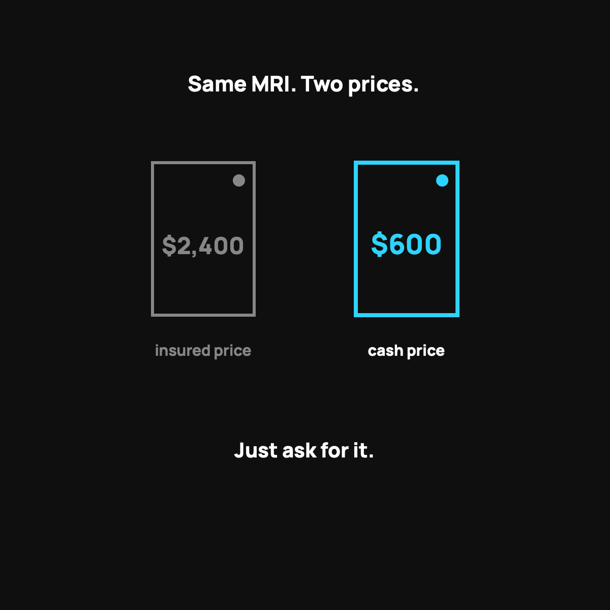

Why Cash Prices Beat Insured Prices
The same procedure can cost less in cash than through insurance. Here's why.
The same procedure at the same hospital can cost less if you pay cash than if you run it through insurance. The sticker price is built for the insurance fight: claims, denials, resubmissions, overhead. The cash price strips all that out. If a bill is under your deductible, you're paying it yourself anyway, so ask for the cash price and compare.

Here's a thing that sounds impossible until you see it happen. The same procedure, at the same hospital, can cost more when you run it through insurance than when you just pay cash. I'm not exaggerating and I'm not talking about a rare edge case. It happens all the time, and once you understand why, you'll never look at a medical bill the same way again.
Two prices for the same thing
Every hospital basically keeps two prices. There's the sticker price, a big scary number aimed at insurance companies. And there's the cash price, the number they'll take from someone paying directly, today, without the insurance paperwork.
The cash price is often a fraction of the sticker. Not ten percent off. Sometimes half, sometimes a lot less than half. Same MRI, same room, same doctor.
Why the gap exists
It comes down to who's paying and how much hassle is involved.
When insurance is in the mix, there's a whole expensive dance. The hospital bills high, the insurer negotiates down, claims get processed, some get denied and resubmitted, and everyone budgets for the fight. That overhead gets baked into the sticker price.
When you pay cash, all of that disappears. No claims, no waiting, no chasing. The hospital gets paid now, for certain, with no paperwork. That certainty is worth a discount to them, so they give you one. You're not begging for charity. You're offering them the thing they like best, which is money now with zero hassle.
The counterintuitive part
This is why "I have insurance" is not always the cheapest way to pay. If a bill is smaller than your deductible, you're paying the whole thing out of pocket anyway, and you might be paying the inflated insured rate while you do it. In that spot, asking for the cash price can literally save you money over using your own insurance. Weird, but true.
How to actually use this
You don't need to be an expert. You just need to ask one question before any non-emergency care: "What's the cash or self-pay price?" Then compare it to what you'd owe through insurance. Sometimes insurance wins, sometimes cash wins. The point is you check instead of assuming. And if you get a big bill, this is the foundation for negotiating it down step by step.
The takeaway
The cash price isn't a secret discount for the poor. It's the real price with the hassle stripped out, and anyone can ask for it. The sticker price is built for the insurance fight. When you're paying out of pocket, you're not in that fight, so don't pay the price that was built for it. Ask for cash, every time.
Questions I get about this
Why does a hospital charge less for cash?
Because money now with zero hassle is worth a discount to them. No claims, no waiting, no chasing. When insurance is in the mix there's a whole expensive dance, and that overhead gets baked into the sticker price. You're not begging for charity. You're offering the thing they like best.
Should I use my insurance or pay cash?
Check both. Before any non-emergency care, ask "What's the cash or self-pay price?" and compare it to what you'd owe through insurance. If the bill is smaller than your deductible, cash often wins. If you're close to your out-of-pocket max, insurance may win. The point is you check instead of assuming.
How much cheaper is the cash price?
Often a fraction of the sticker. Not ten percent off. Sometimes half, sometimes a lot less than half. Same MRI, same room, same doctor. Care advocates negotiating on behalf of health sharing members commonly see 25 to 85 percent off list price.
Nothing here is medical, tax, or financial advice, just what I've learned paying my own family's bills. My family uses CrowdHealth, so I'll always flag when a post is a referral. This one isn't.

Written by David Dewese
Normal guy with a full-time job, wife, and kids. Spent twenty years pursuing music and creative ventures before starting a family. Sharing tips and tricks on how to thrive while living on an artist's income. Not a financial advisor. More about me.
New here?
Normaltown USA is plain-English money and healthcare help for normal people, written by a regular guy with a family of four. No jargon, no hype. Start here, or read the FAQ.